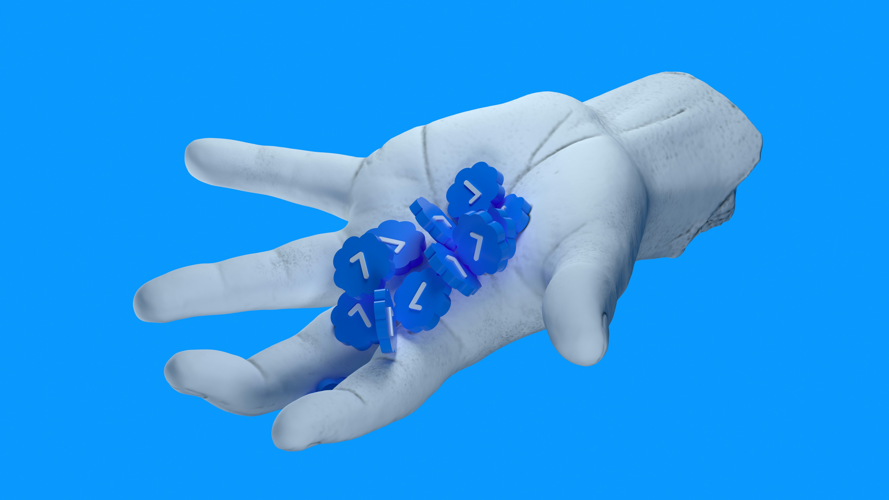

Where ambitious ideas meet artificial intelligence.
Human creativity amplified by AI tools
Project Manhattan helps seafood companies understand, map and improve their traceability posture.
Map your entire supply chain — from the fishing vessel and transshipment through landing, processing and final delivery. Every batch, every link, fully documented.
Explore the Platform →Get a data-driven traceability risk score built on GDST, SIMP, FSMA 204 and EU catch certificate standards. Instantly understand where your supply chain stands.
Learn about MRI →
Upload certificates, documents and references against each KDE. Our expert team reviews your submission and publishes a verified score your buyers and regulators can trust.
Request an Assessment →Access a comprehensive database of 3,000+ species and 249 countries with taxonomy, regulatory and trade data — including ISSF stock status for tuna species.
Explore the Atlas →This short assessment takes about 3 minutes and covers up to 20 key traceability dimensions — from vessel identity to supply chain transparency.
Takes about 3 minutes · No account required · 100% private